File: 000780.gt.txt (if the image is defective, simply delete all Arabic text and the line will be excluded)
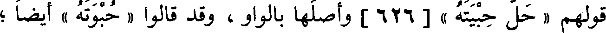
قولهم « حل حبيته » [626] وأصلها بالواو، وقد قالوا « حبوته » أيضا؛
File: 000781.gt.txt (if the image is defective, simply delete all Arabic text and the line will be excluded)
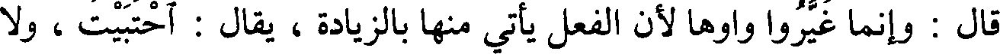
قال : وإنما غيروا واوها لأن الفعل يأتي منها بالزيادة، يقال : احتبيت ، ولا
File: 000782.gt.txt (if the image is defective, simply delete all Arabic text and the line will be excluded)
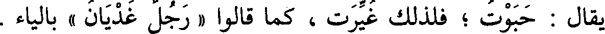
يقال : حبوت ؛ فلذلك غيرت ، كما قالوا « رجل غديان » بالياء .
File: 000783.gt.txt (if the image is defective, simply delete all Arabic text and the line will be excluded)
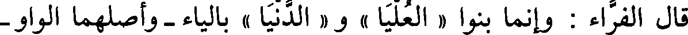
قال الفراء : وإنما بنوا « العليا » و « الدنيا » بالياء - وأصلهما الواو -
File: 000784.gt.txt (if the image is defective, simply delete all Arabic text and the line will be excluded)
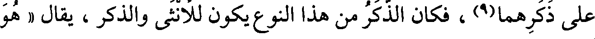
على ذكرهما(9)، فكان الذكر من هذا النوع يكون للأنثى والذكر، يقال « هو
File: 000785.gt.txt (if the image is defective, simply delete all Arabic text and the line will be excluded)
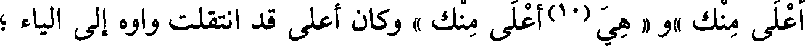
أعلى منك »و « هي(10)أعلى منك » وكان أعلى قد انتقلت واوه إلى الياء ؛
File: 000786.gt.txt (if the image is defective, simply delete all Arabic text and the line will be excluded)
فعلة وفعلة (1)
File: 000787.gt.txt (if the image is defective, simply delete all Arabic text and the line will be excluded)
خطوت « خطوة وخطوة »، وهي « لحمة الثوب ولحمة »(2) .
File: 000788.gt.txt (if the image is defective, simply delete all Arabic text and the line will be excluded)
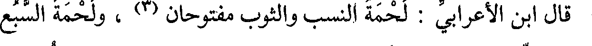
قال ابن الأعرابي : لحمة النسب والثوب مفتوحان(3) ، ولحمة السبع
File: 000789.gt.txt (if the image is defective, simply delete all Arabic text and the line will be excluded)
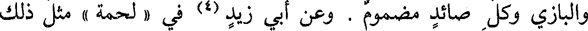
والبازي وكل صائد مضموم . وعن أبي زيد (4) في « لحمة » مثل ذلك
File: 000790.gt.txt (if the image is defective, simply delete all Arabic text and the line will be excluded)
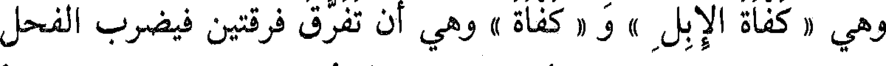
وهي « كفاة الإبل » و « كفاة » وهي أن تفرق فرقتين فيضرب الفحل
File: 000791.gt.txt (if the image is defective, simply delete all Arabic text and the line will be excluded)
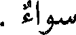
سواء .
File: 000792.gt.txt (if the image is defective, simply delete all Arabic text and the line will be excluded)
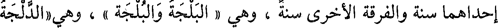
إحداهما سنة والفرقة الأخرى سنة ، وهي « البلجة والبلجة » ، وهي «الدلجة
File: 000793.gt.txt (if the image is defective, simply delete all Arabic text and the line will be excluded)
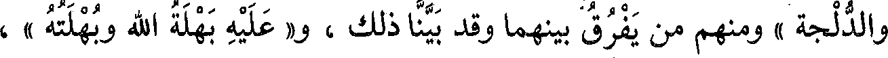
والدلجة » ومنهم من يفرق بينهما وقد بينا ذلك ، و« عليه بهلة الله وبهلته » ،
File: 000794.gt.txt (if the image is defective, simply delete all Arabic text and the line will be excluded)
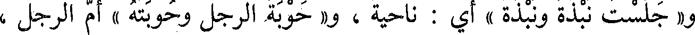
و« جلست نبذة ونبذة » أي : ناحية ، و« حوبة الرجل وحوبته » أم الرجل ،
File: 000795.gt.txt (if the image is defective, simply delete all Arabic text and the line will be excluded)
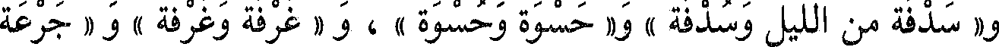
و« سدفة من الليل وسدفة » و« حسوة وحسوة » ، و « غرفة وغرفة » و « جرعة
File: 000796.gt.txt (if the image is defective, simply delete all Arabic text and the line will be excluded)
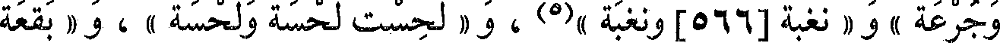
وجرعة » ، و « نغبة[566] ونغبة »(5) ، و « لحست لحسة ولحسة » ، و « بقعة
File: 000797.gt.txt (if the image is defective, simply delete all Arabic text and the line will be excluded)
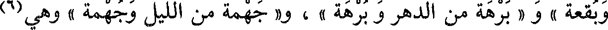
وبقعة » و « برهة من الدهر وبرهة » ، و« جهمة من الليل وجهمة » وهي(6)
File: 000798.gt.txt (if the image is defective, simply delete all Arabic text and the line will be excluded)
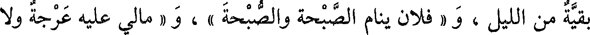
بقية من الليل ، و « فلان ينام الصبحة والصبحة » ، و « مالي عليه عرجة ولا
File: 000799.gt.txt (if the image is defective, simply delete all Arabic text and the line will be excluded)
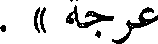
عرجة » .
To Save: `Ctrl+s`, make sure to choose `Webpage, complete`!